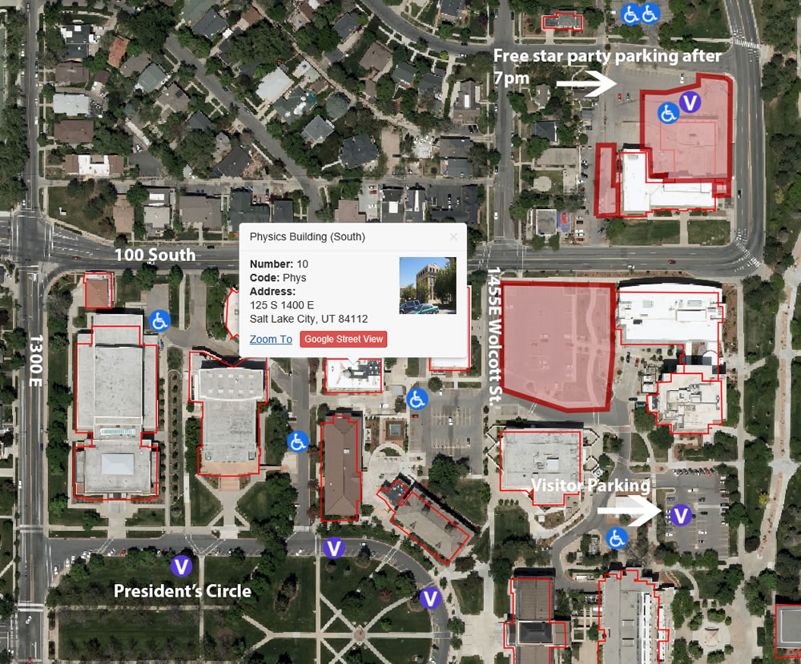

| Directions to SPO |
We are located at: 125 S. 1400 E.
If you are travelling north on I-15: Exit at 600 South, continue eastward on 600 South until you reach 700 East. Turn left and continue northbound on 700 East until you reach 100 South. Turn right onto 100 South and continue until you pass a 90 degree turn to the left. Immidiately after is a parking lot that is free to park in on Wednesday nights. Be prepared to pay for parking until 8pm on other days of the week. If you are traveliing South on I-15: Exit at 400 South, continue eastward until you reach 700 East. Turn left and continue northbound on 700 East until you reach 100 South. Turn right onto 100 South and continue until you pass a 90 degree turn to the left. Immidiately after is a parking lot that is free to park in on Wednesday nights. Be prepared to pay for parking until 8pm on other days of the week. If traveling from I-215 or I-80 Exit at Foothill Boulevard. Continue northward until Mario Capecchi Drive and turn northward once again. Follow Mario Capecchi Drive until North Campus Drive and turn left. Continue west on North Campus Drive until you reach parking by the Kennecott Engineering Building or continue past until Wolcott street, turn left and park in the lots at the end of this road. Most are pay spots until 8pm. Parking permits can be purchased at https://commuterservices.utah.edu/ |
|  |